1 · หัวข้อใหม่ ยังไม่มี widget
10 แบบ- วันเวลาและพื้นที่รับงาน × 5 สไตล์ ข้อมูลมีแล้วใน Star Profile (ช่วงเวลา 4 ช่วง + จังหวัดสูงสุด 3 จังหวัด)
- สัดส่วน × 5 สไตล์ ตระกูลนี้ถูกลบเมื่อ 30 ก.ย. แต่ Star Profile เก็บข้อมูลสัดส่วนแล้วตั้งแต่ 6 ต.ค.
สเปก config ทีละใบอยู่ใน Widget Config ทีละใบ · ใน Canva มี widget 10 หัวข้อ แต่ละหัวข้อมี 5 สไตล์ และมีปุ่มแต่ง widget แบบใหม่ หน้านี้เทียบไฟล์นั้นกับแอปตอนนี้ ว่ามีอะไรต้องออกแบบเพิ่ม และมีข้อมูลอะไรที่ Star Profile ยังไม่มี
เรียงตามขนาดงาน ทั้ง 5 สไตล์นี้ยังไม่มีในแอปเลยสักใบ widget ที่มีอยู่ตอนนี้เป็นคนละชุด (สติกเกอร์ป๊อป · สแครปบุ๊ก · บรรณาธิการ · หน้าต่าง · ผ้าปิกนิก)
วาดใหม่ด้วย HTML จาก Canva หน้า 4 (Social Media) เพื่อใช้เป็นตัวอ้างอิง เลข model ใน Canva สลับกันในบางหน้า หน้านี้จึงเรียกสไตล์ตามหน้าตา
พื้นม่วง ขอบดำหนา เงาดำทึบเยื้อง แถวขาวมีขอบ
ในแอปที่ใกล้สุด: สำรับสติกเกอร์ป๊อปพื้นครีมเทา ไม่มีขอบ เงาบาง แถวสีอ่อนกว่าพื้น
ในแอปที่ใกล้สุด: ไม่มีกรอบผ้าลายตารางสีเขียวเสจ การ์ดขาวขอบดำด้านใน
ในแอปที่ใกล้สุด: ผ้าปิกนิก (ฟ้า/แดง คนละลาย)พื้นกรมท่าเกือบดำ มุมโค้งฟ้านีออนสี่มุม ตัวเลขสีฟ้า
ในแอปที่ใกล้สุด: ไม่มีแถบหน้าต่างสามจุด ชื่อกลางแถบ เส้นคั่นบาง ตัวเลขสีน้ำเงิน
ในแอปที่ใกล้สุด:socialWindow · portfolioWindow
กติกาในแอป: ทุกสไตล์ของหัวข้อเดียวกันต้องแสดงฟิลด์ชุดเดียวกัน ถ้าไม่ครบ ผู้ใช้ที่กดเปลี่ยนสไตล์จะเสียข้อมูลบนการ์ดไปโดยไม่รู้ตัว ช่องสีส้มคือจุดที่ต้องแก้ใน Canva ก่อนส่งให้ dev
| หัวข้อ | ม่วงสติกเกอร์ | ครีมนุ่ม | กรอบตารางเขียว | กลางคืนนีออน | หน้าต่าง Mac |
|---|---|---|---|---|---|
| โปรไฟล์หน้า 3 | ✓ | ✓ | ✓ | ● ขาดสายงานมีแค่ชื่อ + แฮนเดิล | ● ขาดสายงานมีแค่ชื่อ + แฮนเดิล |
| Social Mediaหน้า 4 | ✓ | ✓ | ✓ | ● ขาดแฮนเดิลมีแค่ชื่อแพลตฟอร์ม | ● ขาดแฮนเดิลขาดโลโก้แพลตฟอร์มด้วย |
| เรทรับงานหน้า 5 | ✓ | ✓ | ✓ | ✓ | ✓ |
| รูปผลงานหน้า 6 | ✓ | ✓ | ✓ | ● ขาดชื่องาน + ยอดวิวมีแค่รูป | ● ขาดชื่องาน + ยอดวิวมีแค่รูป |
| วันเวลา + พื้นที่หน้า 7 | ✓ | ✓ | ✓ | ✓ | ✓ |
| ช่องทางติดต่อหน้า 8 | ✓ | ✓ | ✓ | ● ขาด QR LINE | ● ขาด QR LINE |
| สายงานหน้า 9 | ✓ | ✓ + ไอคอน | ✓ | ✓ + ไอคอน | ✓ |
| Bioหน้า 10 | ✓ | ✓ | ✓ | ✓ | ✓ |
| สัดส่วนหน้า 11 | ✓ | ✓ | ✓ | ● ขาดรอบอก/เอว/สะโพกมี 4 จาก 5 ช่อง | ● ขาดรอบอก/เอว/สะโพกมี 4 จาก 5 ช่อง |
| Insightหน้า 12 | ✓ | ✓ | ✓ | ● เหลือค่าเดียวต่อหัวข้อเมืองอันดับ 1 · อายุช่วงเดียว | ● เหลือค่าเดียวต่อหัวข้อเมืองอันดับ 1 · อายุช่วงเดียว |
จุดที่ขาดจะอยู่ที่สไตล์กลางคืนนีออนกับหน้าต่าง Mac แทบทั้งหมด ถ้าแก้สองสไตล์นี้ให้ครบ ตารางนี้จะผ่านทุกช่อง
แต่ละหัวข้อบอกว่าในแอปมีอะไรอยู่แล้ว ข้อมูลพร้อมแค่ไหน และต้องออกแบบอะไร กดดูหน้า Canva ได้ที่ท้ายการ์ด
availability ช่วงเวลา 4 ช่วง (ระบบรวมช่วงติดกันเป็นข้อความอย่าง "ส.–อา. 18.00 เป็นต้นไป") · province สูงสุด 3 จังหวัด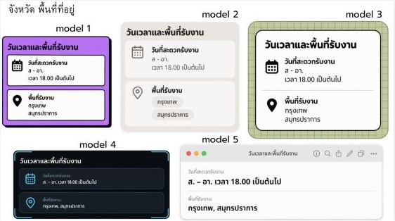
.body ถูกลบเมื่อ 30 ก.ย. ตอนนั้น Star Profile ยังไม่มีข้อมูลนี้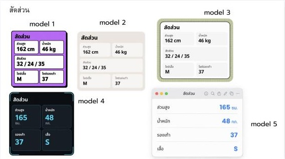
artTypeOver heroMinimal artPortfolio portfolioWindow portfolioGingham + สำรับป๊อป/สแครป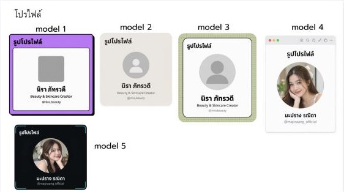
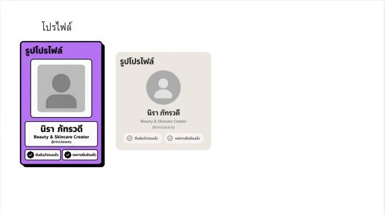
statGiant socialChips socialTiles statWrapped statPoster socialWindow socialGingham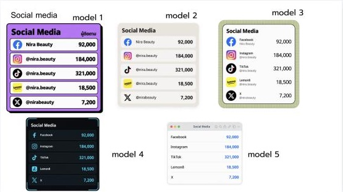
rateTags rateNeon + สำรับป๊อป/สแครป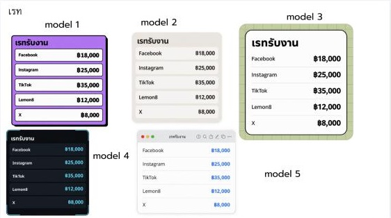
gallery* 8 แบบ · artFilmstrip workFeatured workReel reelShowcase ฯลฯgalleryPost อยู่แล้ว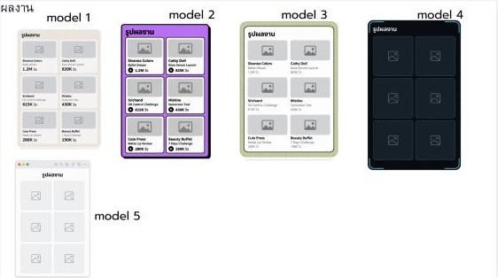
contactCard contactQR contactBar contactStack contactLine contactChips contactPoster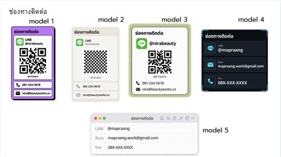
nicheTags stickerTags interestTags nichePoster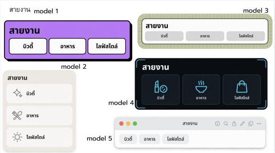
aboutText aboutEditorial aboutBehind scrapAbout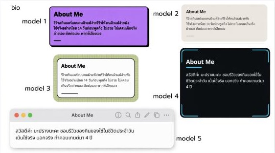
audienceLine audienceSplit audienceAge audienceMap audiencePoster scrapStats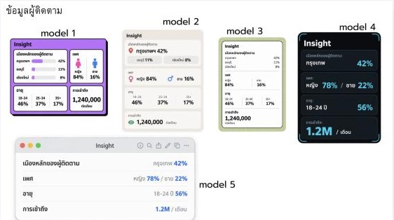
จาก Canva หน้า 1, 2 และ 14 ลองกดตัวอย่างทางขวาได้ ข้อความบน widget แก้ไม่ได้ทั้งหมด — หัวข้อเป็นป้ายตายตัว ตัวเลขมาจากข้อมูลจริง · ฟอนต์ สี ขนาดตามดีไซน์และธีมของการ์ด (19 ต.ค. 2569)
| ส่วน | Canva ให้ทำ | แอปตอนนี้ | ต้องเพิ่ม |
|---|---|---|---|
| พื้นหลัง | สีพื้น · ไล่สี · โปร่ง + เลือกสี | กระจก · เข้ม · ไม่มีพื้น + ลาย | ไล่สี + จานสี |
| ขอบ | มี/ไม่มี · มน/เหลี่ยม · สีขอบ | มี/ไม่มี | ทรงมุม + สีขอบ |
| หัวข้อ | แก้คำ ฟอนต์ สีได้อิสระ | ป้ายตายตัว · แก้คำ/ฟอนต์/สี/ขนาดไม่ได้ | ล็อกแล้ว |
| ข้อมูลจากระบบ | แก้คำไม่ได้ · ฟอนต์ตามธีม | แก้ไม่ได้ · ฟอนต์ตามดีไซน์ | ล็อกแล้ว |
| สีแนะนำ | เปลี่ยนสีพื้น → ระบบเปลี่ยนสีตัวหนังสือให้ | ไม่มี | กติกาสีคู่ |
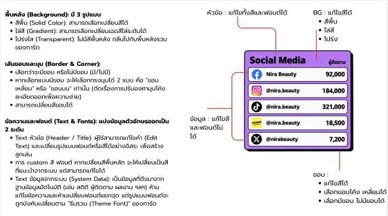
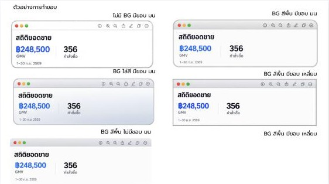
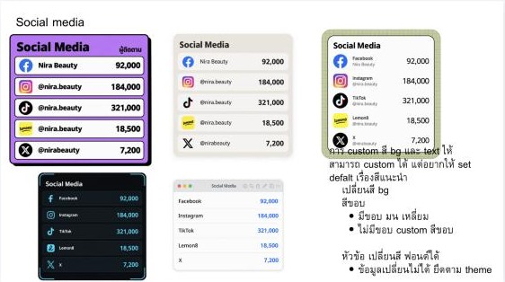
แต่ละข้อเปลี่ยนจำนวนงานหรือข้อมูลที่ต้องเพิ่มใน Star Profile
5 สไตล์นี้มาแทน widget เดิม หรือเพิ่มเข้าไปในตู้? ถ้ามาแทน ต้องวางแผนแปลงการ์ดเก่าและเทมเพลต My Card ที่ใช้ชิ้นเดิมอยู่ ถ้าเพิ่ม ตู้จะโตจาก 87 เป็น 137 ชิ้น
เอาเบอร์โทรกลับมาบนการ์ด และเพิ่มอีเมลไหม? Canva ใช้ทั้งสองอย่างทุกสไตล์ · เบอร์มีใน Star Profile แล้ว ส่วนอีเมลยังไม่มี (มีเว็บไซต์แทน)
เรทแสดงราคาเดียวต่อแพลตฟอร์ม หรือแยกตามรูปแบบงาน? ข้อมูลในแอปแยกตามรูปแบบงาน ส่วนแพ็กเกจ ซ่อนราคา และเงื่อนไขรับเงินจากหน้า 15 ต้องเพิ่มช่องใหม่
ไซซ์เสื้อในสัดส่วน กับยอดวิวในผลงาน จะเอามาจากไหน? ทั้งสองอย่างยังไม่มีใน Star Profile
แถบหน้าต่าง Mac มีไอคอนเครื่องมือ (ค้นหา แชร์ แก้ไข) ส่วนใหญ่การ์ดถูก export เป็นรูป ไอคอนที่ดูเหมือนกดได้แต่กดไม่ได้ควรตัดออก แบบเดียวกับ socialWindow ที่มีอยู่
หน้า 13–18 ถูกซ่อนไว้ (ไอคอนรูปตาขีดฆ่า) น่าจะเป็นฉบับร่าง หรือหน้าที่ยังคุยกันอยู่
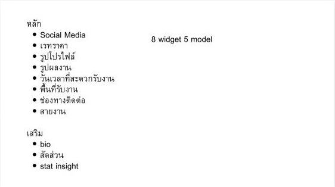
หน้า 17 · รายการหัวข้อ: หลัก 8 (Social Media, เรทราคา, รูปโปรไฟล์, รูปผลงาน, วันเวลาที่สะดวก, พื้นที่รับงาน, ช่องทางติดต่อ, สายงาน) · เสริม 3 (bio, สัดส่วน, stat insight) · "8 widget 5 model"
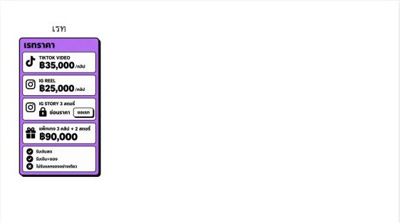
หน้า 15 · เรทแบบละเอียด: ราคาต่อรูปแบบงาน · ซ่อนราคา "ขอเรท" · แพ็กเกจ 3 คลิป + 2 สตอรี่ · รับเงินสด / เงิน+ของ / ไม่รับแลกของ
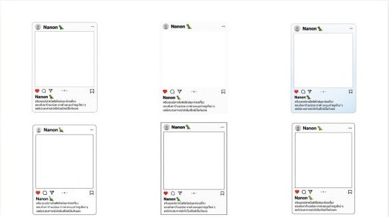
หน้า 16 · กรอบโพสต์ IG 6 แบบ (ขอบบาง · ไม่มีขอบ · ไล่สี · ขอบเหลี่ยม) ใช้กับรูปผลงาน
หน้า 18 · โปรไฟล์ม่วงกับครีม เพิ่มป้าย "ยืนยันตัวตนแล้ว" และ "ผลงานยืนยันแล้ว"
หน้า 13 คือโปรไฟล์ม่วงใบเดียว (ซ้ำกับหน้า 3) · หน้า 14 คือ Social Media 5 สไตล์ พร้อมโน้ตเรื่องสีแนะนำ
ที่มา: ไฟล์ Canva DAHXOY1w-iM (18 หน้า) เทียบกับ StarCard/Model/WidgetModel.swift, StarFlow.swift, Intake.swift ในรีโป salehere-starcard · ภาพในหน้านี้แคปจาก Canva ความละเอียดต่ำ ใช้ดูเลย์เอาต์เท่านั้น